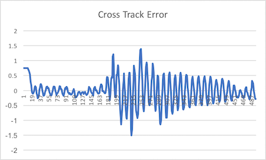
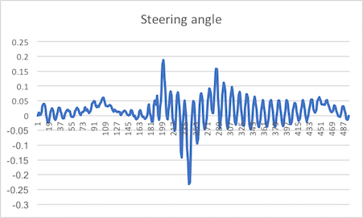
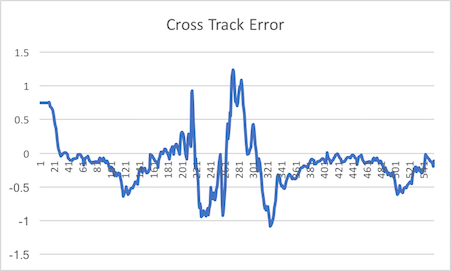
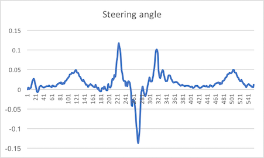

Model Predictive Control Project
cmake and make.My code could be compiled without errors.
To enable debugging, I appended the following line to CMakeLists.txt:
set(CMAKE_BUILD_TYPE Debug)
N and dt values.First I selected the same N and dt values as Lesson 19 (i.e. N = 25 and dt = 0.05).
 
 
waypoints
I converted the positions of the waypoints to the vehicles' coordinate system (main.cpp l.110):
vector<double> v_ptsx;
vector<double> v_ptsy;
for (size_t i = 0; i < ptsx.size(); i++) {
double dx = ptsx[i] - px;
double dy = ptsy[i] - py;
v_ptsx.push_back(dx * cos(-psi) - dy * sin(-psi));
v_ptsy.push_back(dx * sin(-psi) + dy * cos(-psi));
}
the vehicle state
Because of conversion to the vehicle coordinate system, x, y and phi of the vehicle state are 0. Also, the fitting polynomial, cte and epsi are calcuated with the following code (main.cpp l.119):
auto coeffs = polyfit(Eigen::Map<Eigen::VectorXd>(&v_ptsx[0],v_ptsx.size()),
Eigen::Map<Eigen::VectorXd>(&v_ptsy[0],v_ptsy.size()), 3);
double cte = polyeval(coeffs, 0);
double epsi = - atan(coeffs[1]);
As a point of note, the speed is in mph, I converted it to mps with the following code (main.cpp l.19, l.95):
double mph2mps(double v) { return v * 0.44704; }
double v = mph2mps(j[1]["speed"]);
I predicted the position of the car after 100 milliseconds by the following calculation:
$$dt = 0.1$$ $$x' = x + v \times \cos(\psi) \times dt$$ $$y' = y + v \times \sin(\psi) \times dt$$ $$\psi' = \psi - (v / Lf) \times \delta \times dt$$ $$v' = v + a \times dt$$
The following is the actual code (main.cpp l.90):
double dt = 0.1;
vector<double> ptsx = j[1]["ptsx"];
vector<double> ptsy = j[1]["ptsy"];
double px = j[1]["x"];
double py = j[1]["y"];
double psi = j[1]["psi"];
double v = mph2mps(j[1]["speed"]);
double steering_angle = j[1]["steering_angle"];
double throttle = j[1]["throttle"];
px += v * cos(psi) * dt;
py += v * sin(psi) * dt;
psi -= (v / MPC::Lf) * steering_angle * dt;
v += throttle * dt;
The car did not pop up onto ledges or roll over any surface.